<!DOCTYPE html>
<html>

<head>

    <title>Points Géodésiques</title>
    <link rel="shortcut icon" type="image/x-icon" href="icon/icon.png" />
    <meta charset="utf-8" />
    <meta name="viewport" content="width=device-width, initial-scale=1.0">


    <link rel="stylesheet" href="https://unpkg.com/leaflet@1.9.2/dist/leaflet.css" integrity="sha256-sA+zWATbFveLLNqWO2gtiw3HL/lh1giY/Inf1BJ0z14=" crossorigin=""/>
    <script src="https://unpkg.com/leaflet@1.9.2/dist/leaflet.js" integrity="sha256-o9N1jGDZrf5tS+Ft4gbIK7mYMipq9lqpVJ91xHSyKhg=" crossorigin=""></script>


    <!-- Load Leaflet: http://leafletjs.com/ -->
    <link rel="stylesheet" href="https://unpkg.com/leaflet@1.2.0/dist/leaflet.css" integrity="sha512-M2wvCLH6DSRazYeZRIm1JnYyh22purTM+FDB5CsyxtQJYeKq83arPe5wgbNmcFXGqiSH2XR8dT/fJISVA1r/zQ==" crossorigin="" />
    <script src="https://unpkg.com/leaflet@1.2.0/dist/leaflet.js" integrity="sha512-lInM/apFSqyy1o6s89K4iQUKg6ppXEgsVxT35HbzUupEVRh2Eu9Wdl4tHj7dZO0s1uvplcYGmt3498TtHq+log==" crossorigin=""></script>

    <!-- Load Leaflet Basemap Providers: https://github.com/leaflet-extras/leaflet-providers -->
    <!-- Modified to include USGS TNM web services -->
    <script src="JS/leaflet-providers.js"></script>

    <!-- Load Font Awesome icons -->
    <script src="https://use.fontawesome.com/a64989e3a8.js"></script>

    <!-- Grouped Layer Plugin: https://github.com/ismyrnow/leaflet-groupedlayercontrol  -->
    <link rel="stylesheet" href="CSS/leaflet.groupedlayercontrol.min.css">
    <script src="JS/leaflet.groupedlayercontrol.min.js" type="text/javascript"></script>

    <!-- Overview mini map Plugin: https://github.com/Norkart/Leaflet-MiniMap -->
    <link rel="stylesheet" href="CSS/Control.MiniMap.css">
    <script src="JS/Control.MiniMap.min.js" type="text/javascript"></script>

    <!-- Leaflet Drawing Plugin: https://github.com/codeofsumit/leaflet.pm -->
    <link rel="stylesheet" href="https://unpkg.com/leaflet.pm@latest/dist/leaflet.pm.css">
    <script src="https://unpkg.com/leaflet.pm@latest/dist/leaflet.pm.min.js"></script>

    <!-- Leaflet WMS Plugin: https://github.com/heigeo/leaflet.wms -->
    <script src="JS/leaflet.wms.js"></script>

    <!-- Logo Credit Plugin: https://github.com/gregallensworth/L.Control.Credits -->
    <link rel="stylesheet" href="CSS/leaflet-control-credits.css" />
    <script type="text/javascript" src="JS/leaflet-control-credits.js"></script>

    <!-- Load google map layer-->
    <script src="'http://{s}.google.com/vt/lyrs=m&x={x}&y={y}&z={z}'"></script>


    <style>
        body {
            padding: 0;
            margin: 0;
        }

        html,
        body,
        #map {
            height: 100%;
        }

        .legend {
  padding: 6px 8px;
  font: 14px Arial, Helvetica, sans-serif;
  background: white;
  background: rgba(255, 255, 255, 0.8);
  /*box-shadow: 0 0 15px rgba(0, 0, 0, 0.2);*/
  /*border-radius: 5px;*/
  line-height: 24px;
  color: #555;
}
.legend h4 {
  text-align: center;
  font-size: 16px;
  margin: 2px 12px 8px;
  color: #777;
}

.legend span {
  position: relative;
  bottom: 3px;
}

.legend i {
  width: 18px;
  height: 18px;
  float: left;
  margin: 0 8px 0 0;
  opacity: 0.7;
}

.legend i.icon {
  background-size: 18px;
  background-color: rgba(255, 255, 255, 0);
}


    </style>

</head>

<body>

    <div id="map"></div>

    <script>
        var map = L.map('map', {
            center: [33.85, -6.92], 
            zoom: 11
        });

   // Define Base Maps

        var Google_Map = L.tileLayer('http://{s}.google.com/vt/lyrs=m&x={x}&y={y}&z={z}',{
         maxZoom: 50,
         subdomains:['mt0','mt1','mt2','mt3']
        });

        var baseLayers = {
            'Google Map': Google_Map,
            'ESRI Imagery': L.tileLayer.provider('Esri.WorldImagery',{
              maxZoom:19}).addTo(map),
            'Topo Map': L.tileLayer.provider('OpenTopoMap',{
              maxZoom:15})
        };

    // Merchich points Markers

    var MIcon = new L.Icon({
        iconUrl: 'icon/marker_cyan.png',
        iconSize: [32, 32],
        iconAnchor: [12, 41],
        popupAnchor: [1, -34],
    });
    
    var m1 = L.marker([33.8216781852435, -6.99082654704123], {icon: MIcon})
		.bindPopup('<center><b>XX1300mNestSiMeulouk</b></center>Fiche signalétique :<br> <a href="Fiche Signalétique/Merchich/Fiche signaletique_XX1300mNestSiMeulouk.pdf">XX1300mNestSiMeulouk</a>');
        m2 = L.marker([33.8305047403355, -6.9233482284372], {icon: MIcon})
		.bindPopup('<center><b>XII.TC essabrati</b></center>');
        m3 = L.marker([33.9115040602779, -6.94303790286838], {icon: MIcon})
		.bindPopup('<center><b>X(T.324)côte62</b></center>Borne');
	    m4 = L.marker([33.9115049726704, -6.94303705363892], {icon: MIcon})
		.bindPopup('<center><b>X(T.324)côte62</b></center>Monopode');
        m5 = L.marker([33.8585498170785, -6.91786964646914], {icon: MIcon})
	   .bindPopup('<center><b>Vitc côte121</b></center>&nbsp; &nbsp; &nbsp; &nbsp; &nbsp;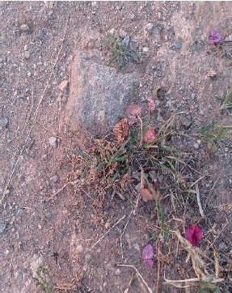<br />Fiche signalétique :<br /><a href="Fiche Signalétique/Merchich/Vitc côte121.pdf">Vitc côte 121</a>');
        m6 = L.marker([33.9359983883598, -6.93766357032697], {icon: MIcon})
		.bindPopup('<center><b>VIII près plage temara</b></center>');
        m7 = L.marker([33.8297847654116, -6.96673245145797], {icon: MIcon})
		.bindPopup('<center><b>VI(Ron1354) côte121</b></center>&nbsp; &nbsp; &nbsp; &nbsp; &nbsp;<br />Fiche signalétique :<br /><a href="Fiche Signalétique/Merchich/Fiche signalétique - VI(Ron1354) côte121.pdf">VI(Ron1354) côte121</a>');
        m8 = L.marker([33.9263610762476, -6.91347586702068], {icon: MIcon})
		.bindPopup('<center><b>Temara</b></center>axe minaret');
		m9 = L.marker([33.7747371450082, -6.89658336359941], {icon: MIcon})
		.bindPopup('<center><b>Talaat ben zekri</b></center>Fiche signalétique :<br /><a href="Fiche Signalétique/Merchich/Fiche_Talaat Ben Zekri.pdf">talaat ben zekri</a>');
        m10 = L.marker([33.8878625298946, -6.9865315109752], {icon: MIcon})
		.bindPopup('<center><b>Sidi Med chrif</b></center>&nbsp; &nbsp; &nbsp; &nbsp; &nbsp;<br />Fiche signalétique :<br /><a href="Fiche Signalétique/Merchich/sidi med chrif.pdf">sidi med chrif</a>');
        m11 = L.marker([33.8936870706428, -6.95191304126665], {icon: MIcon})
		.bindPopup('<center><b>Sidi el hachmi</b></center>');
        m12 = L.marker([33.8936597404972, -6.95192044914437], {icon: MIcon})
		.bindPopup('<center><b>Sidi el achimi</b></center>&nbsp; &nbsp; &nbsp; &nbsp; &nbsp;<br />Fiche signalétique :<br /><a href="Fiche Signalétique/Merchich/fiche_sidi_elachmi.pdf">fiche_sidi_elachmi</a>');
        m13 = L.marker([33.8723398895196, -7.02764802846381], {icon: MIcon})
		.bindPopup('<center><b>Sidi Bouknadel</b></center>&nbsp; &nbsp; &nbsp; &nbsp; &nbsp;<br />Fiche signalétique :<br /><a href="Fiche Signalétique/Merchich/Sidi_Bouknadel_Merchich.pdf">Sidi_Bouknadel_Merchich</a>');
        m14 = L.marker([33.9167536680591, -6.97837567247595], {icon: MIcon})
		.bindPopup('<center><b>Sidi abed</b></center>axe sommet marabout');
        m15 = L.marker([33.856366977906, -7.03322070973692], {icon: MIcon})
		.bindPopup('<center><b>Sidi abdallah</b></center>&nbsp; &nbsp; &nbsp; &nbsp; &nbsp;<br />Fiche signalétique :<br /><a href="Fiche Signalétique/Merchich/Sidi_abdallah_Merchich.pdf">sidi abdellah</a>');
        m16 = L.marker([33.8588407894142, -7.0018533154469], {icon: MIcon})
		.bindPopup('<center><b>Près21 côte71</b></center>&nbsp; &nbsp; &nbsp; &nbsp; &nbsp;<br />Fiche signalétique :<br /><a href="Fiche Signalétique/Merchich/pres 21 cote 71.pdf">pres 21 cote 71</a>');
        m17 = L.marker([33.85398185687, -6.9762287281485], {icon: MIcon})
		.bindPopup('<center><b>Ouled abdellah</b></center>&nbsp; &nbsp; &nbsp; &nbsp; &nbsp;<br />Fiche signalétique :<br /><a href="Fiche Signalétique/Merchich/Ouled Abdelllah.pdf">Ouled Abdelllah</a>');
        m18 = L.marker([33.87958068634, -6.89504866956352], {icon: MIcon})
		.bindPopup('<center><b>Ould al ghoul</b></center>&nbsp; &nbsp; &nbsp; &nbsp; &nbsp;<br />Fiche signalétique :<br /><a href="Fiche Signalétique/Merchich/Fiche_signalétique_ould_ghoul.pdf">ould ghoul</a>');
        m19 = L.marker([33.9167536680591, -6.97837567247595], {icon: MIcon})
		.bindPopup('<center><b>Oued ykem embouchure</b></center>');
        m20 = L.marker([33.9208775086582, -6.89113487146712], {icon: MIcon})
		.bindPopup('<center><b>Mosquée maghrib arab</b></center>axe sommet');
        m21 = L.marker([33.9417275843832, -6.93632875396064], {icon: MIcon})
		.bindPopup('<center><b>Mosquée harhoura</b></center>axe sommet');
        m22 = L.marker([33.8438595864619, -6.87501791076887], {icon: MIcon})
		.bindPopup('<center><b>Mosquée alabiad</b></center>&nbsp; &nbsp; &nbsp; &nbsp; &nbsp;<br />Fiche signalétique :<br /><a href="Fiche Signalétique/Merchich/Mosquée Albaid.pdf">Mosquée Albaid</a>');
        m23 = L.marker([33.8731455789705, -6.98226767384367], {icon: MIcon})
		.bindPopup('<center><b>Maison carrera</b></center>&nbsp; &nbsp; &nbsp; &nbsp; &nbsp;<br />Fiche signalétique :<br /><a href="Fiche Signalétique/Merchich/maison carrera.pdf">maison carrera</a>');
        m24 = L.marker([33.8446348623663, -7.01172073129355], {icon: MIcon})
		.bindPopup('<center><b>IX côte92</b></center>axe sommet');
        m25 = L.marker([33.801656419174, -6.9857999527551], {icon: MIcon})
		.bindPopup('<center><b>IR865 côte142</b></center>&nbsp; &nbsp; &nbsp; &nbsp; &nbsp;<br />Fiche signalétique :<br /><a href="Fiche Signalétique/Merchich/Fiche signalétique - IR865 côte142.pdf">IR865 côte142</a>');
        m26 = L.marker([33.8013503319233, -6.98626608474778], {icon: MIcon})
		.bindPopup('<center><b>I(R865) côte142</b></center>&nbsp; &nbsp; &nbsp; &nbsp; &nbsp;<br />Fiche signalétique :<br /><a href="Fiche Signalétique/Merchich/Fiche signalétique - I(R865) côte142.pdf">I(R865) côte142</a>');
        m27= L.marker([33.8294861380447, -6.85118391288921], {icon: MIcon})
		.bindPopup('<center><b>El menzeh</b></center>pilier et quadripode');
        m28 = L.marker([33.8294857009579, -6.85118271680191], {icon: MIcon})
		.bindPopup('<center><b>El menzeh</b></center>quadripode mire basse<br />&nbsp; &nbsp; &nbsp; &nbsp; &nbsp;<br />Fiche signalétique :<br /><a href="Fiche Signalétique/Merchich/EL MENZEH.pdf">EL MENZEH</a>');
        m29 = L.marker([33.8192908833652, -6.85270789726347], {icon: MIcon})
		.bindPopup('<center><b>El menzah bis</b></center>monopode');
        m30 = L.marker([33.7875174264831, -6.95047550410661], {icon: MIcon})
		.bindPopup('<center><b>El koudiat ben abid côte 202</b></center>&nbsp; &nbsp; &nbsp; &nbsp; &nbsp;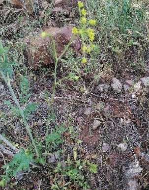<br />Fiche signalétique :<br /><a href="Fiche Signalétique/Merchich/El Koudia Ben Abid côte 202.pdf">El Koudia Ben Abid côte 202</a>');
        m31 = L.marker([33.8672778258155, -6.84848543840491], {icon: MIcon})
		.bindPopup('<center><b>Delta40</b></center>&nbsp; &nbsp; &nbsp; &nbsp; &nbsp;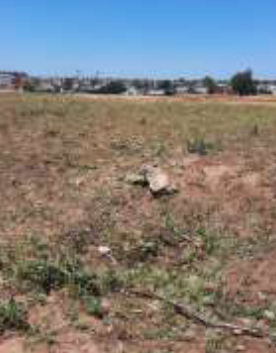<br />Fiche signalétique :<br /><a href="Fiche Signalétique/Merchich/delta40.pdf">delta40</a>');
        m32 = L.marker([33.9275922416035, -6.94683111533879], {icon: MIcon})
		.bindPopup('<center><b>Delta23</b></center>cheminée');
        m33 = L.marker([33.8484696995147, -6.90030881504372], {icon: MIcon})
		.bindPopup('<center><b>Delta20 côte172</b></center>Fiche signalétique :<br /><a href="Fiche Signalétique/Merchich/delta20_cote172.pdf">delta20 côte172</a>');
        m34 = L.marker([33.8669658397361, -6.91020306027992], {icon: MIcon})
		.bindPopup('<center><b>Delta19</b></center>Fiche signalétique :<br /><a href="Fiche Signalétique/Merchich/Fiche_Signalétique_Delta_19.pdf">delta19</a>');
        m35 = L.marker([33.8404130023714, -6.90969585843373], {icon: MIcon})
		.bindPopup('<center><b>Delta17</b></center>&nbsp; &nbsp; &nbsp; &nbsp; &nbsp;<br />Fiche signalétique :<br /><a href="Fiche Signalétique/Merchich/Fiche_signalétique_delta_17.pdf">delta 17</a>');
        m36 = L.marker([33.8173401230333, -6.90951552259635], {icon: MIcon})
		.bindPopup('<center><b>Delta16</b></center>monopode');
        m37 = L.marker([33.8672278545601, -6.95618213490527], {icon: MIcon})
		.bindPopup('<center><b>Delta14</b></center>monopode');
        m38 = L.marker([33.8459748532086, -6.93874706473761], {icon: MIcon})
		.bindPopup('<center><b>Delta13 dar thami</b></center>&nbsp; &nbsp; &nbsp; &nbsp; &nbsp;<br />Fiche signalétique :<br /><a href="Fiche Signalétique/Merchich/Delta 13 dar thami.pdf">delta13 dar thami</a>');
        m38 = L.marker([33.8234969815677, -6.93374337007943], {icon: MIcon})
		.bindPopup('<center><b>Delta12</b></center>moule avec tube');
        m39 = L.marker([33.8290584449758, -6.9692482161855], {icon: MIcon})
		.bindPopup('<center><b>Delta10 sidi mellouk</b></center>&nbsp; &nbsp; &nbsp; &nbsp; &nbsp;<br />Fiche signalétique :<br /><a href="Fiche Signalétique/Merchich/Fiche signalétique - Delta10 sidi mellouk.pdf">Delta10 sidi mellouk</a>');
        m40 = L.marker([33.840172800709, -7.01372879712784], {icon: MIcon})
		.bindPopup('<center><b>Delta 9</b></center>Moule avec balisette');
        m41 = L.marker([33.8993082853471, -6.89350756123702], {icon: MIcon})
		.bindPopup('<center><b>Delta 43</b></center>&nbsp; &nbsp; &nbsp; &nbsp; &nbsp;<br />Fiche signalétique :<br /><a href="Fiche Signalétique/Merchich/Fiche_signalétique_Delta_43.pdf">delta 43</a>');
        m42 = L.marker([33.9013144441792, -7.00061079555167], {icon: MIcon})
		.bindPopup('<center><b>Delta 15</b></center>monopode');
        m43 = L.marker([33.9147441701524, -6.89730406241805], {icon: MIcon})
		.bindPopup('<center><b>Dar lahsen ben kacem</b></center>');
        m44 = L.marker([33.7840799162586, -6.88343198409834], {icon: MIcon})
		.bindPopup('<center><b>Dar caîd thami</b></center>Fiche signalétique :<br /><a href="Fiche Signalétique/Merchich/Fiche_Dar Caîd Thami.pdf">dar caîd thami</a>');
        m45 = L.marker([33.8569470205039, -6.81186510728742], {icon: MIcon})
		.bindPopup('<center><b>Dar boujabra</b></center>moule avec tube');
        m46 = L.marker([33.8957970482617, -6.86422131691506], {icon: MIcon})
		.bindPopup('<center><b>Côte109</b></center>&nbsp; &nbsp; &nbsp; &nbsp; &nbsp;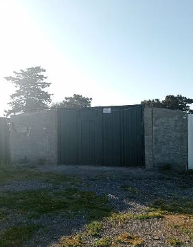<br />Fiche signalétique :<br /><a href="Fiche Signalétique/Merchich/Côte109.pdf">Côte109</a>');
        m47 = L.marker([33.8314849749575, -6.82353598001983], {icon: MIcon})
		.bindPopup('<center><b>Chaabat driwa</b></center>&nbsp; &nbsp; &nbsp; &nbsp; &nbsp;<br />Fiche signalétique :<br /><a href="Fiche Signalétique/Merchich/CHAABAT DRIWA.pdf">chaabat driwa</a>');
        m48 = L.marker([33.7580697660173, -6.91259390061393], {icon: MIcon})
		.bindPopup('<center><b>Côte 252</b></center>Fiche signalétique :<br /><a href="Fiche Signalétique/Merchich/Côte 252.pdf">Côte 252</a>');
        m49 = L.marker([33.8041632624351, -6.88017735284823], {icon: MIcon})
		.bindPopup('<center><b>Côte 222</b></center>centre mire');
        m50 = L.marker([33.8686320235556, -6.93162426522136], {icon: MIcon})
		.bindPopup('<center><b>Côte 109</b></center>&nbsp; &nbsp; &nbsp; &nbsp; &nbsp;<br />Fiche signalétique :<br /><a href="Fiche Signalétique/Merchich/Côte109.pdf">Côte 109</a>');
        m51 = L.marker([33.872425821595, -7.00520033841422], {icon: MIcon})
		.bindPopup('<center><b>Côte 46</b></center>&nbsp; &nbsp; &nbsp; &nbsp; &nbsp;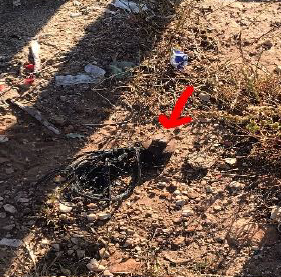<br />Fiche signalétique :<br /><a href="Fiche Signalétique/Merchich/Côte46_Merchich.pdf">Côte 46</a>');
		m52 = L.marker([33.8651173436302, -6.88130435446271], {icon: MIcon})
		.bindPopup('<center><b>Bir hadj tahar</b></center>Fiche signalétique :<br /><a href="Fiche Signalétique/Merchich/Fiche_signalétique_Bir_hadj_tahar.pdf">bir hadj tahar</a>');
		m53 = L.marker([33.8993502503301, -6.91662589175218], {icon: MIcon})
		.bindPopup('<center><b>Bernia</b></center>monopode');
		m54 = L.marker([33.786837589436, -6.94958335420331], {icon: MIcon})
		.bindPopup('<center><b>Antenne radio</b></center>&nbsp; &nbsp; &nbsp; &nbsp; &nbsp;<br>Fiche signalétique :<br><a href="Fiche Signalétique/Merchich/Antenne radio.pdf">Antenne radio</a>');
        m55 = L.marker([33.8231659083639, -6.93446115317102], {icon: MIcon})
		.bindPopup('<center><b>aéro ferme rose</b></center>');
        m56 = L.marker([33.8729750231545, -6.98252429956754], {icon: MIcon})
		.bindPopup('<center><b>aéro carrire</b></center>');
        m57 = L.marker([33.8528402024449, -6.97737839332152], {icon: MIcon})
		.bindPopup('<center><b>9bis Pr Douar cherkR</b></center>&nbsp; &nbsp; &nbsp; &nbsp; &nbsp;<br />Fiche signalétique<br /><a href="Fiche Signalétique/Merchich/9bis Pr Douar cherkR.pdf">9bis Pr Douar cherkR</a>').openPopup();
        m58 = L.marker([33.8125898757108, -6.95912543804529], {icon: MIcon})
		.bindPopup('<center><b>11G2184 côte142</b></center>&nbsp; &nbsp; &nbsp; &nbsp; &nbsp;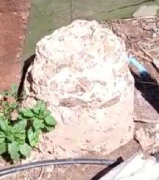<br />Fiche signalétique :<br /><a href="Fiche Signalétique/Merchich/11G2184 côte142.pdf">11G2184 côte142</a>');


    var merchich = L.layerGroup([m1,m2,m3,m4,m5,m6,m7,m8,m9,m10,m11,m12,m13,m14,m15,m16,m17,m18,m19,m20,
                                 m21,m22,m23,m24,m25,m26,m27,m28,m29,m30,m31,m32,m33,m34,m35,m36,m37,m38,m39,m40,
                                 m41,m42,m43,m44,m45,m46,m47,m48,m49,m50,m51,m52,m53,m54,m55,m56,m57,m58])

    // NGM points Markers

    var NGMIcon = new L.Icon({
        iconUrl: 'icon/marker_red.png',
        iconSize: [32, 32],
        iconAnchor: [12, 41],
        popupAnchor: [1, -34],
    });

    
    var n1 = L.marker([33.82974, -6.90595], {icon: NGMIcon})
        .bindPopup('<center><b>Gak3l3 37</b></center>&nbsp; &nbsp; &nbsp; &nbsp; &nbsp;<br />Fiche signalétique : :<br /><a href="Fiche Signalétique/NGM/Gak3l3 37.pdf">Gak3l3 37</a>');
        n2 = L.marker([33.82724, -6.90713], {icon: NGMIcon})
        .bindPopup('<center><b>Gak3l3 36</b></center>Fiche signalétique :<br /><a href="Fiche Signalétique/NGM/Gak3l3 36.pdf">Gak3l3 36</a>');
        n3 = L.marker([33.82277, -6.91184], {icon: NGMIcon})
        .bindPopup('<center><b>Gak3l3 35</b></center>Médaillon Aqueduc puisard');
        n4 = L.marker([33.83983, -6.91306], {icon: NGMIcon})
        .bindPopup('<center><b>Gak3l3 38</b></center>&nbsp; &nbsp; &nbsp; &nbsp; &nbsp;<br />Fiche signalétique :<br /><a href="Fiche Signalétique/NGM/Gak3l3 38.pdf">Gak3l3 38</a>');
        n5 = L.marker([33.81832, -6.91533], {icon: NGMIcon})
        .bindPopup('<center><b>Gak3l3 34</b></center>Médaillon Rivet Borne');
        n6 = L.marker([33.81227, -6.91796], {icon: NGMIcon})
        .bindPopup('<center><b>Gak3l3 33</b></center>Médaillon Pylône');
        n7 = L.marker([33.83932, -6.91917], {icon: NGMIcon})
        .bindPopup('<center><b>Gak3l3 39</b></center>&nbsp; &nbsp; &nbsp; &nbsp; &nbsp;<br />Fiche signalétique :<br /><a href="Fiche Signalétique/NGM/Gak3l3 39.pdf">Gak3l3 39</a>');
        n8 = L.marker([33.80596, -6.92385], {icon: NGMIcon})
        .bindPopup('<center><b>Gak3l3 32</b></center>Fiche signalétique :<br /><a href="Fiche Signalétique/NGM/Fiche_Gak3l3 32_NGM.pdf">Gak3l3 32</a>');
        n9 = L.marker([33.80051, -6.92574], {icon: NGMIcon})
        .bindPopup('<center><b>Gak3l3 31</b></center>Fiche signalétique :<br /><a href="Fiche Signalétique/NGM/GAK313 31.pdf">GAK313 31</a>');
        n10 = L.marker([33.83385, -6.92687], {icon: NGMIcon})
        .bindPopup('<center><b>Gak3l3 40</b></center>&nbsp; &nbsp; &nbsp; &nbsp; &nbsp;<br />Fiche signalétique :<br /><a href="Fiche Signalétique/NGM/Gak3l3 40.pdf">Gak3l3 40</a>');
        n11 = L.marker([33.78987, -6.93027], {icon: NGMIcon})
        .bindPopup('<center><b>Gak3l3 30</b></center>&nbsp; &nbsp; &nbsp; &nbsp; &nbsp;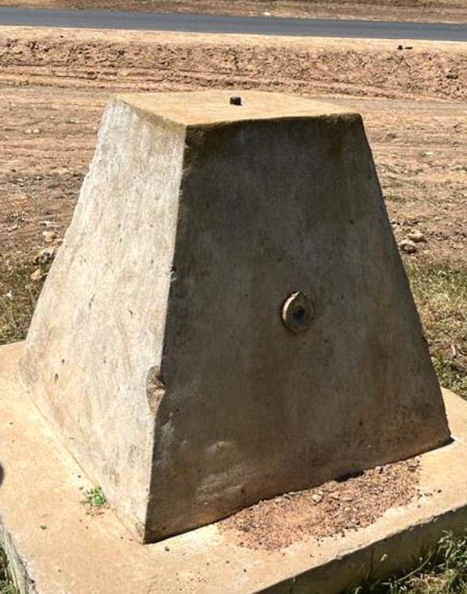<br />Fiche signalétique :<br /><a href="Fiche Signalétique/NGM/Gak3l3 30.pdf">Gak3l3 30</a>');
        n12 = L.marker([33.83932, -6.93445], {icon: NGMIcon})
        .bindPopup('<center><b>Gak3l3 41</b></center>&nbsp; &nbsp; &nbsp; &nbsp; &nbsp;<br />Fiche signalétique :<br /><a href="Fiche Signalétique/NGM/Gak3l3 41.pdf">Gak3l3 41</a>');
        n13 = L.marker([33.84513, -6.93952], {icon: NGMIcon})
        .bindPopup('<center><b>Gak3l3 42</b></center>&nbsp; &nbsp; &nbsp; &nbsp; &nbsp;<br />Fiche signalétique :<br /><a href="Fiche Signalétique/NGM/Gak3l3 42.pdf">Gak3l3 42</a>');
        n14 = L.marker([33.85068, -6.94605], {icon: NGMIcon})
        .bindPopup('<center><b>Gak3l3 43</b></center>&nbsp; &nbsp; &nbsp; &nbsp; &nbsp;<br />Fiche signalétique :<br /><a href="Fiche Signalétique/NGM/Gak3l3 43.pdf">Gak3l3 43</a>');
        n15 = L.marker([33.85812, -6.95669], {icon: NGMIcon})
        .bindPopup('<center><b>Gak3l3 44</b></center>&nbsp; &nbsp; &nbsp; &nbsp; &nbsp;<br />Fiche signalétique :<br /><a href="Fiche Signalétique/NGM/Fiche signalétique - Gak3I344.pdf">Gak3l3 44</a>');
        n16 = L.marker([33.8636, -6.9653], {icon: NGMIcon})
        .bindPopup('<center><b>Gak3l3 45</b></center>Fiche signalétique :<br /><a href="Fiche Signalétique/NGM/GAK31345.pdf">Gak3l3 45</a>');
        n17 = L.marker([33.889722, -6.965556], {icon: NGMIcon})
        .bindPopup('<center><b>GH45</b></center>&nbsp; &nbsp; &nbsp; &nbsp; &nbsp;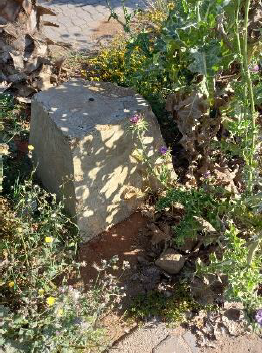<br />Fiche signalétique :<br /><a href="Fiche Signalétique/NGM/GH45.pdf">GH45</a>');
        n18 = L.marker([33.86906, -6.97208], {icon: NGMIcon})
        .bindPopup('<center><b>Gak3l3 46</b></center>Fiche signalétique :<br /><a href="Fiche Signalétique/NGM/GAK31346.pdf">Gak3l3 46</a>');
        n19 = L.marker([33.8718, -6.9753], {icon: NGMIcon})
        .bindPopup('<center><b>Gak3l3 47</b></center>Fiche signalétique :<br /><a href="Fiche Signalétique/NGM/GAK31347.pdf">Gak3l3 47</a>');
        n20 = L.marker([33.886944, -6.975556], {icon: NGMIcon})
        .bindPopup('<center><b>GH44</b></center>Fiche signalétique :<br /><a href="Fiche Signalétique/NGM/GH44.pdf">GH44</a>');
        n21 = L.marker([33.87544, -6.9794], {icon: NGMIcon})
        .bindPopup('<center><b>Gak3l3 48</b></center>Fiche signalétique :<br /><a href="Fiche Signalétique/NGM/Gak3l3 48.pdf">Gak3l3 48</a>');
        n22 = L.marker([33.879167, -6.983889], {icon: NGMIcon})
        .bindPopup('<center><b>GH43</b></center>Fiche signalétique :<br /><a href="Fiche Signalétique/NGM/GH43.pdf">GH43</a>');
        n23 = L.marker([33.870833, -6.999444], {icon: NGMIcon})
        .bindPopup('<center><b>GH42</b></center>&nbsp; &nbsp; &nbsp; &nbsp; &nbsp;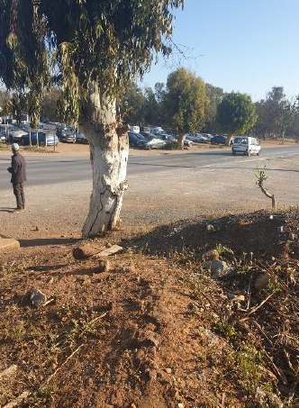<br />Fiche signalétique :<br /><a href="Fiche Signalétique/NGM/GH42_NGM.pdf">GH42</a>');
        n24 = L.marker([33.865833, -7.005833], {icon: NGMIcon})
        .bindPopup('<center><b>GH41</b></center>&nbsp; &nbsp; &nbsp; &nbsp; &nbsp;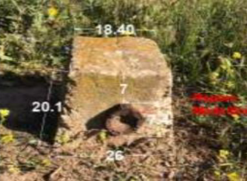<br />Fiche signalétique :<br /><a href="Fiche Signalétique/NGM/GH41_NGM.pdf">GH41</a>');
        n25 = L.marker([33.86797197222222222555555555555556, -6.92694542222222222222222222222223], {icon: NGMIcon})
        .bindPopup('<center><b>Point7-Mers El kheir</b></center>&nbsp; &nbsp; &nbsp; &nbsp; &nbsp;<br />Fiche signalétique :<br /><a href="Fiche Signalétique/NGM/Point 7 - Mers El kheir - NGM.pdf">Point7-Mers El kheir</a>');

        
    var ngm = L.layerGroup([n1,n2,n3,n4,n5,n6,n7,n8,n9,n10,n11,n12,
                            n13,n14,n15,n16,n17,n18,n19,n20,n21,n22,n23,n24,n25])

    // RFM points Markers

    var RFMIcon = new L.Icon({
        iconUrl: 'icon/marker_green.png',
        iconSize: [32, 32],
        iconAnchor: [12, 41],
        popupAnchor: [1, -34],
    });

    var r1 = L.marker([33.8652292111111, -7.00776983333333], {icon: RFMIcon})
       .bindPopup('<center><b>GH40</b></center>&nbsp; &nbsp; &nbsp; &nbsp; &nbsp;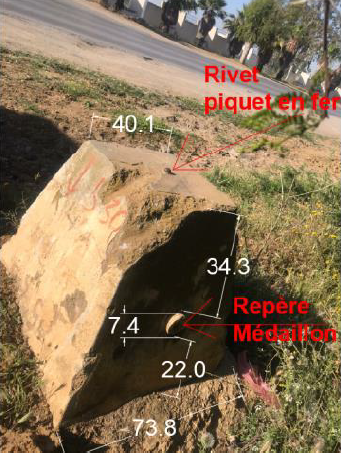<br />Fiche signalétique :<br /><a href="Fiche Signalétique/RFM/GH40_RFM.pdf">GH40</a>');
        r2 = L.marker([33.8521498527778, -6.85384975277778], {icon: RFMIcon})
        .bindPopup('<center><b>Gab14</b></center>&nbsp; &nbsp; &nbsp; &nbsp; &nbsp;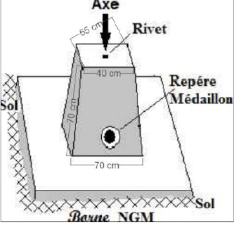<br />Fiche signalétique :<br /><a href="Fiche Signalétique/RFM/Gab14_RFM.pdf">Gab14</a>');
        r3 = L.marker([33.86797197222222222555555555555556, -6.92694542222222222222222222222223], {icon: RFMIcon})
        .bindPopup('<center><b>Point7-Mers El kheir</b></center>&nbsp; &nbsp; &nbsp; &nbsp; &nbsp;<br />Fiche signalétique :<br /><a href="Fiche Signalétique/RFM/Borne mers POINT 7 .pdf">Point7-Mers El kheir</a>');
        r4 = L.marker([33.8279671972222, -6.81579551944444], {icon: RFMIcon})
        .bindPopup('<center><b>RBM484T2</b></center>Petite borne');
        r5 = L.marker([33.8041668388889, -6.88016799444444], {icon: RFMIcon})
        .bindPopup('<center><b>5587</b></center>&nbsp; &nbsp; &nbsp; &nbsp; &nbsp;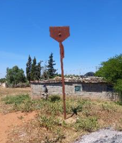<br />Fiche signalétique :<br /><a href="Fiche Signalétique/RFM/fiche_signalétique_5587.pdf">5587</a>');
        r6 = L.marker([33.8290592527778, -6.96923209166667], {icon: RFMIcon})
        .bindPopup('<center><b>5346</b></center>&nbsp; &nbsp; &nbsp; &nbsp; &nbsp;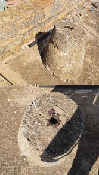<br />Fiche signalétique :<br /><a href="Fiche Signalétique/RFM/Fiche signalétique - 5346 RFM.pdf">5346</a>');
        r7 = L.marker([33.8672359972222, -6.95617674166667], {icon: RFMIcon})
        .bindPopup('<center><b>5378</b></center>&nbsp; &nbsp; &nbsp; &nbsp; &nbsp;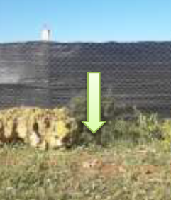<br />Fiche signalétique :<br /><a href="Fiche Signalétique/RFM/fiche_signalétique-pt5378.pdf">5378</a>');
        r8 = L.marker([33.8993260777778, -6.91666057777778], {icon: RFMIcon})
        .bindPopup('<center><b>5482HC</b></center>&nbsp; &nbsp; &nbsp; &nbsp; &nbsp;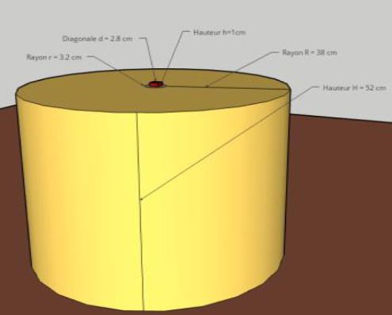<br />Fiche signalétique :<br /><a href="Fiche Signalétique/RFM/RFM5482HC.pdf">5482HC</a>');
        r9 = L.marker([33.9114990277778, -6.94302044444444], {icon: RFMIcon})
        .bindPopup('<center><b>5418</b></center>Monopode avec borne');
        r10 = L.marker([33.9166877805556, -6.97834018333333], {icon: RFMIcon})
        .bindPopup('<center><b>5311HC</b></center>');
        r11 = L.marker([33.84486415277777777777777777777777, -6.93968974722222222222222222222222], {icon: RFMIcon})
        .bindPopup('<center><b>Borne 6</b></center>&nbsp; &nbsp; &nbsp; &nbsp; &nbsp;<br />Fiche signalétique :<br /><a href="Fiche Signalétique/RFM/point6ITRF.pdf">Borne 6</a>');
        r12 = L.marker([33.8375195, -6.9076787], {icon: RFMIcon})
        .bindPopup('<center><b>Borne 8</b></center>&nbsp; &nbsp; &nbsp; &nbsp; &nbsp;<br />Fiche signalétique :<br /><a href="Fiche Signalétique/RFM/Fiche Borne 8.pdf">Borne 8</a>');
        r13 = L.marker([33.78987, -6.93027], {icon: RFMIcon})
        .bindPopup('<center><b>B40</b></center>&nbsp; &nbsp; &nbsp; &nbsp; &nbsp;<br />Fiche signalétique :<br /><a href="Fiche Signalétique/RFM/B40.pdf">B40</a>')


    var rfm = L.layerGroup([r1,r2,r3,r4,r5,r6,r7,r8,r9,r10,r11,r12,r13])


    
        //Overlay grouped layers    
        var groupOverLays = {
            "Points géodésiques": {
                "Merchich": merchich,
                "NGM": ngm,
                "RFM": rfm
            }

        };

        
        //add layer switch control
        L.control.groupedLayers(baseLayers, groupOverLays).addTo(map);

       
        //add scale bar to map
        L.control.scale({
            position: 'bottomleft'
        }).addTo(map);

        // Overview mini map
        var Esri_WorldTopoMap = L.tileLayer('https://server.arcgisonline.com/ArcGIS/rest/services/World_Topo_Map/MapServer/tile/{z}/{y}/{x}', {
            attribution: '&copy; Esri &mdash; Esri, DeLorme, NAVTEQ, TomTom, Intermap, iPC, USGS, FAO, NPS, NRCAN, GeoBase, Kadaster NL, Ordnance Survey, Esri Japan, METI, Esri China (Hong Kong), and the GIS User Community'
        });

        var miniMap = new L.Control.MiniMap(Esri_WorldTopoMap, {
            toggleDisplay: true,
            minimized: false,
            position: 'bottomleft'
        }).addTo(map);

        //define Drawing toolbar options
        var options = {
            position: 'topleft', // toolbar position, options are 'topleft', 'topright', 'bottomleft', 'bottomright'
            drawMarker: true, // adds button to draw markers
            drawPolyline: true, // adds button to draw a polyline
            drawRectangle: true, // adds button to draw a rectangle
            drawPolygon: true, // adds button to draw a polygon
            drawCircle: true, // adds button to draw a cricle
            cutPolygon: true, // adds button to cut a hole in a polygon
            editMode: true, // adds button to toggle edit mode for all layers
            removalMode: true, // adds a button to remove layers
        };

        // add leaflet.pm controls to the map
        map.pm.addControls(options);
        
var legend = L.control({ position: "bottomright" });

legend.onAdd = function(map) {
  var div = L.DomUtil.create("div", "legend");
  div.innerHTML += "<h4>Légende</h4>";
  div.innerHTML += '<i class="icon" style="background-image: url(icon/marker_cyan.png);background-repeat: no-repeat;"></i><span>MERCHICH</span><br>';
  div.innerHTML += '<i class="icon" style="background-image: url(icon/marker_green.png);background-repeat: no-repeat;"></i><span>RFM</span><br>';
  div.innerHTML += '<i class="icon" style="background-image: url(icon/marker_red.png);background-repeat: no-repeat;"></i><span>NGM</span><br>';
  

  return div;
};

legend.addTo(map);

        

    </script>

</body>

</html>
